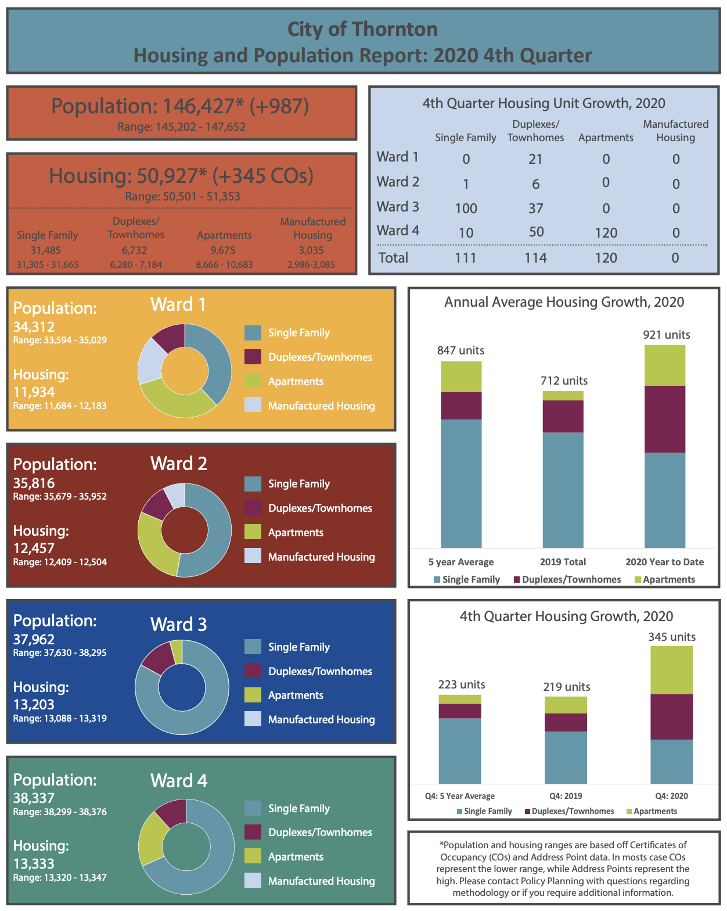

All About Thornton Colorado
Only half built-out, Thornton has over 1,400 acres of greenfield sites ready for development. With over $375 million in quality development recently opened or started along the I-25 corridor, the city is experiencing unprecedented growth. Our central location at the center of Denver’s transportation network lends us all the amenities of the Metro area and a workforce of over 3 million to draw from.
Thornton's History
Thornton consisted solely of farmland until 1953, when Sam Hoffman purchased a lot off Washington Street about seven miles (11 km) north of Denver. The town he laid out was the first fully planned community in Adams County, and the first to offer full municipal services from a single tax levy, including recreation services and free trash pickup. Thornton was named in honor of Former Colorado Governor Dan Thornton.
The Thornton Community Association (TCA) was formed in 1954 to help guide the new community's development. By the end of 1955, Thornton had 5,500 residents in over 1,200 homes. The TCA was instrumental in Thornton's 1956 incorporation as a city. Oyer G. Leary was elected the first mayor.
Thornton has a rich community and proactive city services that promote healthand well being among its diverse citizens. It boasts 2 active Community and Recreation centers, a Cultural Heritage center, an arts and Culture Center, one of Denver's most well loved water parks and over 80 miles of trails and 270 acres of parks and recreational space.
City Demographics
With over 140,000 people, Thornton is the 6th largest city in Colorado. Thornton plans to grow to approximately 250,000 people and is well-prepared for this future growth, having invested hundreds of millions of dollars in infrastructure in the city, including a water project that will provide Thornton with all the water it needs for future growth.
The city of Thornton is located primarily on the east side of I-25 between 84th Avenue and Highway 7. With over 1,400 acres of develop-able commercial land along the I-25 corridor, Thornton offers plentiful opportunities for commercial development and is easily accessible with its eight (8) interchanges along I-25, three (3) along E-470, and close proximity to I-70, US 36, and Denver International Airport (20 minutes). Thornton is located just 10 miles north of downtown Denver and within 1 hour of the Rocky Mountains’ world-class outdoor recreation. The city will soon be located along the North Line of the FasTrack’s transit network and will have 3 stations here. The North Line is set to open in 2019.
Thornton is seeing incredible commercial activity. Recent openings include a 2M+ sq. ft. Amazon Sort and Robotics Center, the 350,000 sq. ft. Simon Premium Outlets, and a new Topgolf facility. Development activity in Thornton is at an all-time high!
There are nine (9) major universities and colleges located within a 45-mile radius of the community, as well as numerous smaller institutions of higher learning. In addition, Thornton businesses have access to a metro Denver workforce exceeding 2 million.
Thornton Statistics
- 36 Square Miles
- Population: 142,963
- Avg HH Income: $92,384
- Median Age: 33.8
- Total HH: 48,042
- Avg Home Value: $366,070
Source: ESRI Business Analyst – 2019
Local Landmarks
Community Holiday Festivals and Special Events
Eggcessible Egg Scramble
Join Thornton Parks, Recreation & Community Programs, along with our partners from Brothers Plumbing, Heating and Electric, Credit Union of Colorado and North Metro Church for a morning of springtime fun, collecting eggs and candy in a safe environment.
Fourth of July
THIS 2021 EVENT IS TENTATIVELY SCHEDULED FOR SUNDAY, JULY 4 FROM 2-11 P.M. AT CARPENTER PARK FIELDS
Funtaztikids Educational Arts Series
Wednesday,
June 12
1-2p.m.
René Heredia Flamenco
Fantasy Dance Theatre
World-renowned flamenco guitarist, Maestro
René Heredia, will provide an educational and
entertaining presentation on the history and
culture of flamenco. The show will
include live music, dance and audience
participation.
Wednesday,
June 19
1-2p.m.
Swallow Hill Music
Attendees will enjoy exciting dance, beautiful
clothing and soulful music from Ireland. Molly
Bennett, founder of the Bennett School of Irish
Dance will demonstrate Irish dancing including
jigs, reels, and hornpipes.
Harvest Fest
THIS 2021 EVENT IS TENTATIVELY SCHEDULED FOR SATURDAY, OCTOBER 2 FROM 12-10 P.M. AT COMMUNITY PARK
Lions Club Relays
THIS 2020 EVENT TENTATIVELY SCHEDULED FOR SUNDAY, MAY 2 FROM 11:45 A.M. - 4 P.M. AT ADAMS 12 5 STAR STADIUM
Movies in the Park
Thornton Parks Recreation & Community Programs
is happy to bring you our
2020 Absolutely FREE Movies in the Park!
Carpenter Park Fields ~ 108th Avenue & Colorado Boulevard
All movies will start at dusk.
Paws for a Dip
THIS 2021 EVENT IS TENTATIVELY SCHEDULED FOR SATURDAY, AUGUST 28
FROM 10 A.M. - 2 P.M. AT CITY POOL
Thorntonfest
THIS 2021 EVENT IS TENTATIVELY SCHEDULED FOR SATURDAY, JUNE 5 FROM 10 A.M. - 10 P.M. AT CARPENTER PARK FIELDS
Trunk or Treat
THIS 2021 EVENT IS TENTATIVELY SCHEDULED FOR SATURDAY, OCTOBER 23 FROM 6-9 P.M. AT CARPENTER PARK FIELDS
Winterfest
THIS 2021 EVENT IS TENTATIVELY SCHEDULED FOR FRIDAY, DECEMBER 10 FROM 6-10 P.M. AND SATURDAY, DECEMBER 11 FROM 10 A.M - 6 P.M. AT CARPENTER RECREATION CENTER
Santas Calling
Would your child enjoy a personal phone call from Santa before he
comes to town on Christmas Eve? Santa will be riding through
Thornton December 15-17. At this time, he will talk directly to
boys and girls between the ages of 18 months and 12 years old, finding
out who has been naughty and who has been nice! To register each
child, parents need to complete and return a phone form for Santa
(below). Remember to mark your calendar and answer the call!
Santa and his elves will be making calls December 15-17 between the
hours of 6 and 8 p.m. FREE!
Registration forms MUST be received by Friday, December 4.